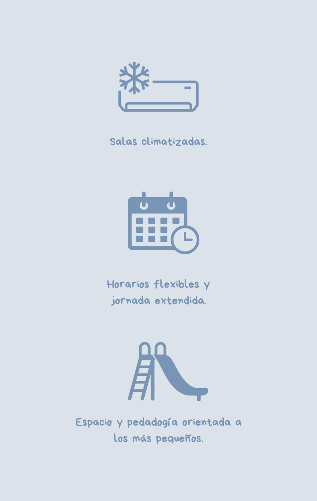
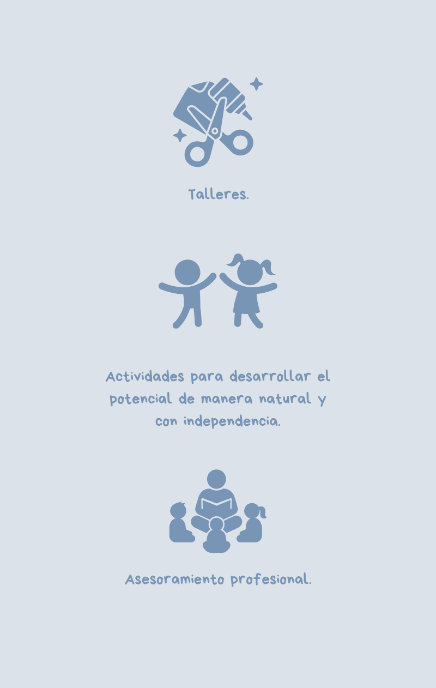

Acompañando la infancia con amor y ternura
En el Jardín acompañamos los primeros años de la infancia con amor y ternura, ofreciendo un espacio seguro, cuidado y respetuoso.
Inscripción 2026¡Bienvenidos al Jardin Maternal Tuerquitas!
¿Quienes somos?
Somos un Jardín Maternal con más de 7 años de trayectoria, perteneciente a la gestión de UOM Villa Constitución, dedicado al acompañamiento de la primera infancia desde una mirada amorosa, respetuosa y comprometida. Trabajamos cada día para brindar un entorno seguro y cuidado, donde los niños y las niñas puedan crecer, explorar y aprender a través del juego, acompañados por un equipo de trabajo conformado por docentes de Nivel Inicial y personal auxiliar, que prioriza el bienestar y el desarrollo integral de cada infancia.
Nos dedicamos a la atención de niños y niñas desde los 45 días hasta los 4 años, promoviendo el juego como pilar fundamental del aprendizaje y acompañando cada etapa desde una mirada sensible y respetuosa de los tiempos, necesidades y emociones de cada infancia.
ACOMPAÑAMOS CADA COMIENZO
Construimos vínculos de confianza con las familias, entendiendo que el trabajo en conjunto es fundamental para acompañar los primeros años de vida con cuidado, compromiso y dedicación.
NUESTRA MIRADA
Creemos en una infancia vivida con amor y ternura, donde cada niño y niña es respetado en sus tiempos, emociones y necesidades. Entendemos el juego como la forma principal de expresión y aprendizaje, y acompañamos cada proceso desde una presencia cercana, atenta y sensible.

